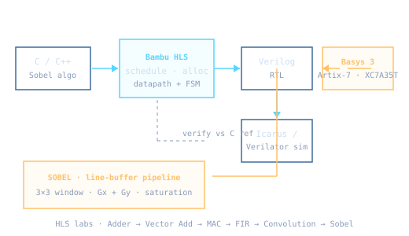

A hands-on High-Level Synthesis (HLS) laboratory series exploring how a C/C++ algorithm becomes a hardware architecture. The long-term target is a hardware accelerator for Sobel edge detection — implemented first as a software reference and then progressively transformed into optimized RTL with Bambu HLS, targeting the Basys 3 (Artix-7) board.
Bambu HLS (schedule · allocate · bind) → generated Verilog RTLstart_port / done_port)II = 1 (one pixel per cycle)Sobel operates on a 3×3 pixel neighborhood per output pixel, computing horizontal (Gx) and vertical
(Gy) gradient convolutions and combining them as |Gx| + |Gy| — avoiding an expensive
square-root — then saturating to an 8-bit output. The key hardware challenge is not the arithmetic but efficiently
feeding the 3×3 window every cycle (line buffers, shift registers, sliding windows).
The emphasis of the project is the architecture: understanding how an HLS compiler's scheduling, pipelining and memory decisions change latency, throughput (II) and FPGA resource utilization.
Status: environment set up, Lab 0 (adder) and Lab 1 (vector addition) verified in simulation.